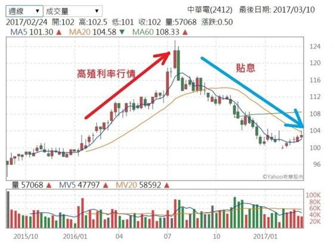
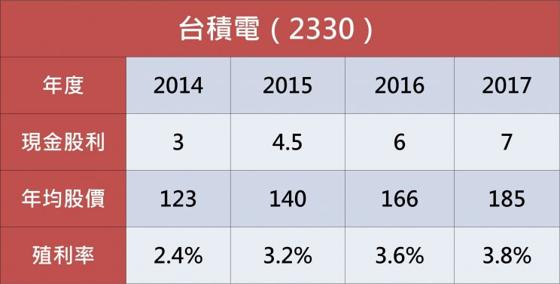

暗藏殺機的「高殖利率概念股」
2017.03.13
最近的上市櫃公司紛紛公告去年的獲利，也逐漸公告今年的股利政策，『高殖利率概念股』又開始成為眾人追逐的焦點了！但是只要是標榜『高殖利率』的股票，都是穩賺的保證嗎？
填權息比高殖利率重要
首先要提醒你一下，唯有在填權息的狀況之下，股利才是安穩的放進自己的口袋。在這邊拿中華電(2412)去年的表現為例，中華電在2016/07/21除息5.49元，假設在2016/07/20以當天收盤價123元買進一張，除息後可以獲得5.49元的現金股利。但是在除息之後，中華電股價開始緩慢走跌，2017/03/10收盤價為103元，此時的總價值只剩下103+5.49＝108.49，一股賠掉了123-108.49＝14.51元，一張股票就賠掉了1.451萬，而且更慘的是除息後獲得的5,490元現金股利，還要繳交所得稅。
 從上圖的藍色箭頭不難看出，中華電在2016年除息之後，股價一路走跌、填息無望，投資人儘管賺了股息，但是『賠了價差，股息還要繳稅』。由此可見，『高殖利率』並非股票投資獲利的最佳保證。高殖利率是去年的獲利，填權息要看今年
為何會出現這種狀況呢？請投資人一定要記住『股價看未來』，一家公司在今年配發的股利，是屬於『去年』賺的錢；除息之後能否填權息，則是要看『今年』賺的錢。一樣拿中華電來當麻豆，2015年中華電的EPS為5.52元，因此有能力在2016年配發5.49元的現金股利；但是2016年中華電的EPS衰退為5.16元，較2015年衰退幅度為6.52％，因此參與除息的投資人當然是賠錢收場了。因此，在買進『高殖利率』股票並參加除權息之前，請先確定今年的EPS會比去年持平（最好成長）。唯有獲利持平或是成長，才能增加填權息的機率，參與除權息的投資人才會真的賺到錢。
如何從『高股息概念股』賺錢
儘管上面例子中，參與除息的投資人，結果是『賠錢還要繳稅』，那麼還可以買進『高殖利率概念股』嗎？繼續拿中華電來當麻豆，2014年的EPS為4.98元（配發現金4.86元），2015年EPS為5.52元（配發現金5.49元），2015年的獲利與股利均較前一年度成長，因此2016年初中華電就瀰漫著一股『高殖利率』行情。請看上圖的紅色箭頭處，股價從年初的100元附近，一路上漲到除息前一天的123元，每股的價差高達23元。請問你，中華電平均每年的現金股利不過5元，23元的價差相當賺進了快5年的現金股利了，何不落袋為安呢？而且23元的價差還不用繳所得稅跟健保補充費，絕對不會『賠錢還要繳稅』。
高殖利率概念股，究竟是要買進參加除權息？還是可以當成炒作的題材賺價差呢？還是那一句話『要觀察今年獲利的成長幅度』。如果今年的獲利較去年成長，就可以安心參加除權息，不僅可以賺進股息還有機會賺進價差。但是如果預估今年的獲利，會較去年衰退呢？就建議不要參加除權息了！反而可以趁每年初在報導『高股息殖利率』題材時，先逢低買進；但是在七、八月除息旺季之時，趁著投資人因為『高殖利率』的誘惑而瘋狂買進、推升股價之際，賺夠價差就跑，不要參加除權息。
高股息殖利率概念股，其實暗藏著『賺到股價、賠上價差，賠錢還要繳稅』的風險，所以絕對不要看到媒體報導，就一窩蜂的買進。還是要認真做一下功課，研究一下今年的獲利是成長、持平、還是衰退？然後用不同的策略來賺錢。投資股票的目的還是在賺錢，因此重點在於選擇產業景氣向上，有競爭力的好公司。例如現在的科技越來越進步，物聯網、人工智慧等發展是一日千里，但是所有的電子元件都需要IC，專精在晶圓製造的台積電業績逐年成長，儘管每年的現金殖利率不高，但是投資人在價差的獲利，卻超過股利好幾倍。 